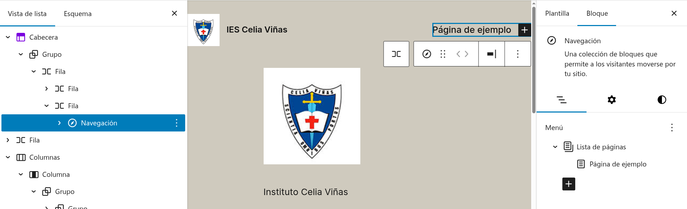
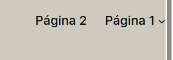
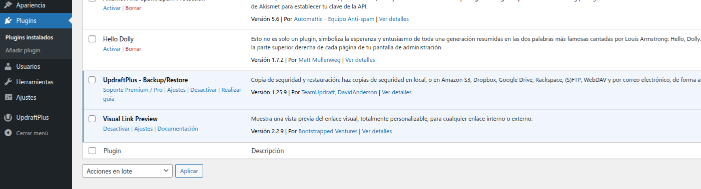
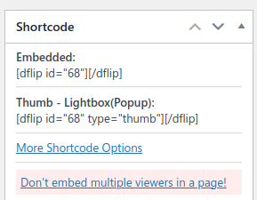
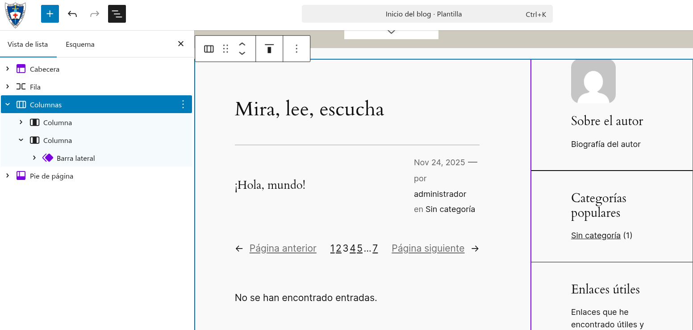
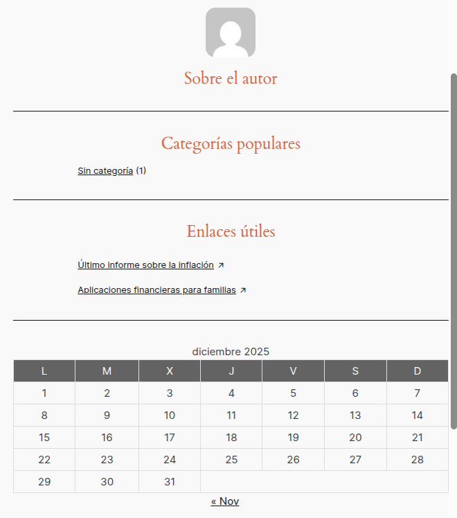
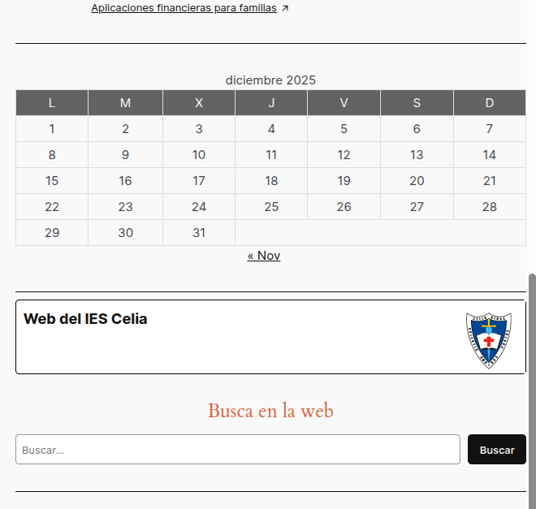

Tarea 4
Resto de configuración en Wordpress
FICHA TÉCNICA DE LA ACTIVIDAD ¶
Unidad Didáctica
Unidad 2: Instalación, configuración y utilización de Gestores de
Contenido (CMS)
Nombre de la Tarea
UT2. Tarea 4: Instalación y configuración de WordPress
Resultado de Aprendizaje (RA)
RA1: Instala gestores de contenidos, identificando
sus aplicaciones y configurándolos según requerimientos.
Criterios de Evaluación (CE)
CE b) Se han identificado los requerimientos
necesarios para instalar gestores de contenidos.
CE e) Se han realizado pruebas de
funcionamiento.
CE g) Se han instalado y configurado los módulos y
menús necesarios.
Tiempo de Realización Estimado
4 horas (Equivalente a 1 sesión semanal completa de taller)
MÉTODO DE ENTREGA Y
FORMATO
[X] Documento: Documento en formato
[PDF] (UT2_Tarea1_NombreAlumno.pdf) que incluya la
explicación detallada de cada fase y el set de capturas de pantalla
obligatorias solicitado en el desarrollo. El texto debe estar
completamente justificado, con los apartados destacados
en negrita. Cada captura debe llevar un comentario
explicativo inferior sobre la acción de ingeniería realizada.
[ ] Archivos de Código: No se requiere la entrega de
archivos fuente para esta tarea.
[X] Enlace/Texto: El portal debe permanecer
operativo y accesible públicamente a través de la red del centro para su
auditoría directa por parte del profesor en la URL:
http://<TU_IP_FLOTANTE>/iescelia.1. DESCRIPCIÓN GENERAL. OBJETIVOS ¶
2. CONSIDERACIONES PREVIAS ¶
3. ACTIVIDADES A REALIZAR ¶
Paso1 .Menús
Vamos a personalizar el menú que tenemos en el encabezado. Los menús se pueden poner en cualquier sitio como cualquier bloque.

En el panel de la derecha vemos que solo tenemos una opción. Vamos a añadir un enlace por cada una de las páginas que tenemos y eliminar esa página de ejemplo. Vamos a meter un enlace dentro de otro a modo de submenú. Hacer una captura donde se aprecie vuestro menú (una imagen como la anterior)

Paso 2. Usuarios ¶
En esta parte crearemos un usuario de cada tipo (excepto Administrador)
Realizaremos capturas de pantalla de la creación de un usuario, la lista de usuario y del entorno de cada uno de ellos una vez entramos
El resultado final será un documento PDF, con el formato requerido para este curso, que detalle todo el proceso a través de explicaciones de los pasos realizados, capturas de pantalla de los mismos y cuestiones más relevantes de todo el proceso (problemas encontrados, pasos en la configuración...)
Se creará un usuario llamado profesor, con permisos de administrador. La contraseña se facilitará en la documentación, para verificar su realización.
Paso 3. Instalación de plugin ¶
Instalar los siguientes plugin en WordPress

Hacer una captura como la anterior explicando el proceso para insertarlos
Añadiremos un plugin para visualizar PDFs en los posts. Para ello:
Buscaremos en los plugins 'Dear Flipbook – PDF'.
Lo instalamos y activamos
Para usarlo, tenemos una nueva opción en el menú del administrador que nos permite crear un nuevo FlipBooK. Seleccionaremos el PDF y copiaremos el código que aparece arriba a la derecha

Para que aparezca en una entrada o página insertaremos un Shortcode y pegaremos el código anterior. Incluirlo en una entrada o página y hacer una captura
4. Barra lateral e inserción de elementos ¶
Realizar capturas de pantalla más importantes de todo el proceso que vas a seguir. Incluir explicaciones de lo que se va haciendo y como.
Incluir una barra lateral en el bloque de la derecha de nuestro sitio. Hacer una captura de como se ve la barra en el sitio (No en el editor)

Modificar lo necesario para que el resultado sea el siguiente. Tenemos que editar distintos elementos. Añadir un calendario. Hacer una captura

Debajo del calendario vamos a añadir un tipo de enlaces con el plugin instalado en el apartado anterior, llamado 'Visual Link Preview'. Ahora tendremos la opción Visual Link Preview en el insertador de bloques. Añadir un enlace como el siguiente:
Paso 5. Incrustar contenido: ¶
En esta parte vamos a incrustar un mapa con una localización de Google Maps, y el tiempo en nuestra localidad (por ejemplo con www.eltiempo.es). En una de las páginas o entradas seguir estos pasos:
En Google Maps buscaremos una localización.
Pulsaremos sobre compartir, y elegiremos la opción de incrustar.
Seleccionamos el código.
En los Widgets de nuestra web, añadimos uno de tipo 'HTML Personalizado'.
Pegamos el código en el widget.
Añadimos otro widget de tipo 'Texto' pero el código lo pegamos en la pestaña 'HTML',
NOTA: Si utilizamos el widget de tipo 'HTML Personalizado', sólo podemos usar código con etiquetas 'iframe', ya que los que llevan la etiqueta 'script', los filtra por seguridad.
Realizar capturas de pantalla donde se visualicen los pasos más importantes y el resultado (que se vea vuestra ip-publica)
Paso 6. Copia de seguridad ¶
Con el otro de los plugin instalados, vamos a hacer una copia de seguridad de nuestro sitio. Hacer una captura donde se visualice que se ha realizado
El resultado final será un documento PDF, con el formato requerido para este curso, que detalle todo el proceso a través de explicaciones de los pasos realizados, capturas de pantalla de los mismos y cuestiones más relevantes de todo el proceso (problemas encontrados, pasos en la configuración...)
 |
4. CALIFICACIÓN ¶
IMPORTANTE: El retraso en el plazo de entrega a través de la plataforma, la entrega del documento en formatos editables no permitidos (como .docx), capturas con identificación del alumno/a o la omisión de los enlaces de las fuentes documentales utilizadas penalizará gravemente la nota o invalidará la práctica.
CRITERIOS DE CALIFICACIÓN (RÚBRICA GENERAL) ¶
| Apartado / Criterio | Muy Bien (100%) | Notable (75%) | Bien (50%) | Mejorable (30%) | Insuficiente (0%) | Peso |
|---|---|---|---|---|---|---|
| Contenido Técnico / funcionalidad | Completo y sin errores | Completo y con errores mínimos. | Mayoría correcto, con algunos errores | Errores notables o faltan partes importantes. | No realizado o no cumple con los requisitos | 50% |
| Procedimiento | Todos los pasos, con mejoras o justificaciones | Sigue todos los pasos correctamente. | Pasos incompletos | Pasos incompletos o erróneos. | No se sigue. | 40% |
| Presentación | Limpio, profesional y creativo. | Limpiol, sigue el formato | Desorganizado o sin formato | Desorganizado y difícil de leer. | Muy pobre o no trabajada | 10% |
Cuando son ejercicios individuales que no dependientes unos de los otros se establecerá en la rúbrica un apartado o criterio para cada ejercicio o bloque de ejercicios, como en el siguiente ejemplo:
CRITERIOS DE CALIFICACIÓN (RÚBRICA por ACTIVIDAD) ¶
| Apartado / Criterio | Muy Bien (100%) | Notable (75%) | Bien (50%) | Mejorable (30%) | Insuficiente (0%) | Peso |
|---|---|---|---|---|---|---|
| Ejercicios de … | Completo y sin errores | Completo y con errores mínimos. | Mayoría correcto, con algunos errores | Errores notables o faltan partes importantes. | No realizado o no cumple con los requisitos | 50% |
En el caso de entregar una documentación la presentación se valorará como sigue ¶
| 1 | 0.75 | 0.5 | 0.3 | 0 | |
|---|---|---|---|---|---|
| Presentación | Documento limpio, profesional y creativo. Sigue el formato (PDF) y cumple rigurosamente con todas las indicaciones de formato(1). | Documento limpio, sigue el formato (PDF) pero no cumple alguna de las indicaciones de formato o de forma básica. | Desorganizado o sin formato adecuado (ej. no es PDF o le falta formato básico). | Desorganizado y difícil de leer. | Muy pobre o no trabajada. |
Portada, texto justificado, enunciados/apartados destacados en negrita, comentarios sobre cada una de las capturas o pasos realizados
Si en la documentación se tienen que entregar capturas el criterio será
| Criterio | Puntuación | Realizado correctamente | Realizado con algún error | Realizado con errores | No realizado |
|---|---|---|---|---|---|
| Calidad de la documentación y presentación | 1.5 Puntos | Documento impecable. Las capturas son legibles, se identifica al autor (prompt/user), el texto explica el proceso y se usan formatos adecuados. | Documento bien estructurado. Las capturas son legibles pero falta alguna explicación o la identificación del autor no es clara en todas. | Las capturas son de mala calidad o difíciles de leer. Falta documentación esencial o no se identifica al autor. | No entrega documento o es totalmente ilegible/sin capturas. |